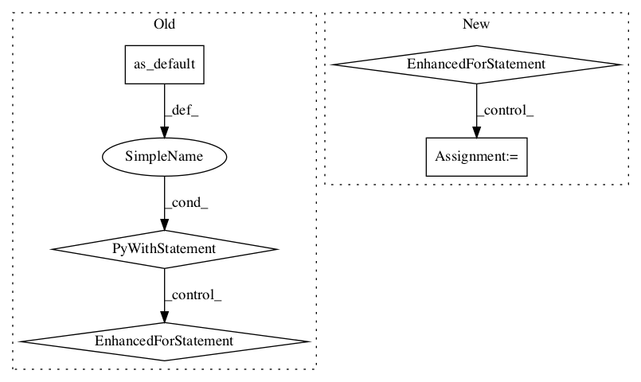

1330ea3102315bd79c9c6efdbd8818c8e2a3cb8f,deepchem/metalearning/maml.py,MAML,fit,#MAML#Any#Any#Any#Any#,200

Before Change
if True, restore the model from the most recent checkpoint and continue training
from there. If False, retrain the model from scratch.
with self._graph.as_default():
self._session.run(tf.global_variables_initializer())
if restore:
self.restore()
manager = tf.train.CheckpointManager(self._checkpoint, self.model_dir,
max_checkpoints_to_keep)
checkpoint_time = time.time()
// Main optimization loop.
for i in range(steps):
self._session.run(self._clear_gradients)
for j in range(self.meta_batch_size):
self.learner.select_task()
feed_dict = self.learner.get_batch()
feed_dict[self._global_step] = i
for key, value in self.learner.get_batch().items():
feed_dict[self._meta_placeholders[key]] = value
self._session.run(self._add_gradients, feed_dict=feed_dict)
self._session.run(self._meta_train_op)
// Do checkpointing.
if i == steps - 1 or time.time(
) >= checkpoint_time + checkpoint_interval:
with self._session.as_default():
manager.save()
checkpoint_time = time.time()
def restore(self):
Reload the model parameters from the most recent checkpoint file.
last_checkpoint = tf.train.latest_checkpoint(self.model_dir)
if last_checkpoint is None:
After Change
inputs = self.learner.get_batch()
feed_dict = {}
feed_dict[self._global_step] = i
for k in range(len(inputs)):
feed_dict[self._input_placeholders[k]] = inputs[k]
feed_dict[self._meta_placeholders[k]] = inputs[k]
self._session.run(self._add_gradients, feed_dict=feed_dict)
self._session.run(self._meta_train_op)
// Do checkpointing.
In pattern: SUPERPATTERN
Frequency: 3
Non-data size: 5
Instances
Project Name: deepchem/deepchem
Commit Name: 1330ea3102315bd79c9c6efdbd8818c8e2a3cb8f
Time:
Author: null
File Name: deepchem/metalearning/maml.py
Class Name: MAML
Method Name: fit
Project Name: deepchem/deepchem
Commit Name: 1330ea3102315bd79c9c6efdbd8818c8e2a3cb8f
Time:
Author: null
File Name: deepchem/metalearning/maml.py
Class Name: MAML
Method Name: train_on_current_task
Project Name: deepchem/deepchem
Commit Name: de7f5863338af5e1f92257cb29a6ca9a1c52c473
Time:
Author: null
File Name: examples/low_data/toxcast_maml.py
Class Name:
Method Name: compute_scores